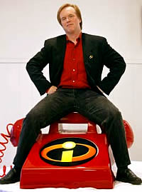
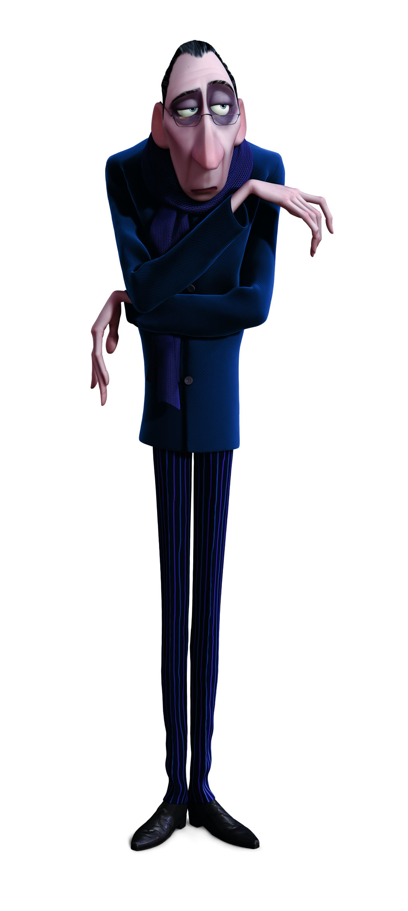
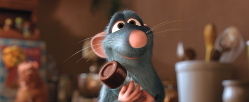

Lecciones de RataTouille
Rats era lo que los ingenieros llamamos un proyecto incendiado. Se trataba de una película importante para Pixar, pues era el primer proyecto de la era “post Disney”, y debía tener por lo tanto todos los elementos de un éxito. Y aunque el trabajo de Jan Pikava, su director, era de alta calidad artística, la historia era considerada “muy plana” por los ejecutivos de Pixar.
Steve Jobs decide hacer algo, primero corre la fecha de estreno de Cars de noviembre de 2005 a mayo de 2006, y el equipo de Pikava recibe la orden de fortalecer la historia, y lograr que el público fuera capaz de involucrarse con las peripecias de los personajes.
Meses después Pikava muestra su avance a Jobs y al directorio. Los caracteres y la ambientación eran “adorables”, pero la historia seguía siendo débil. Simplemente con la película tal como estaba no era posible demostrar que Pixar era capaz de vivir sin Disney, ni menos conseguir el interés de los demás estudios.
Si conocen a Steve Jobs sabrán que no sólo tiene un buen gusto por los detalles estéticos y artísticos, sino que es un hombre que sabe de negocios, y de como exigirle a sus equipos para conseguir el mejor producto posible. El fundador de Apple decidió que algo debía hacerse rápido.
¡Llamen a Mr. Increible!

Brad Bird había recibido su primer Oscar, y terminaba la promoción de su DVD de Los Increíbles. Lo esperaban unas bien merecidas vacaciones, pero le piden que ayude a la gente de Rats para mejorar la historia:
... Dos semanas antes de irme, me pidieron que ayudara a la gente de 'Ratatouille' a mejorar la historia. Lo hice por dos semanas, y trabajé con ellos en la estructura y llegamos hasta la mitad del tercer acto. Entonces me despedí les dije 'Hasta luego, y buena suerte', y partí a mis vacaciones. Llevaba dos días cuando recibí una llamada de Steve Jobs, John Lasseter y Ed Catmull, básicamente me pedían que volviera y me hiciera cargo del proyecto."
Bird obtuvo 18 meses de plazo para llevar a buen puerto el proyecto. Mientras Pixar cambiaba las fechas de estreno y llegaba a un acuerdo de compra con Disney, y un sillón del directorio para Steve Jobs en el estudio del ratón Mickey.
Cambios
Varios ajustes al guión fueron necesarios, y un rediseño de los personajes, para lograr que se comportaran más como ratas que como seres humanos. Bird compró decenas de ratas y las llevó al estudio para que los animadores las estudiaran por meses. Lecciones de alta cocina, viajes a Paris, fueron algunas de las actividades planeadas para cambiar el aspecto de la película.

Bard Bird con Peter O’Toole'
Bird contrató a famosos comediantes norteamericanos, y Peter O'toole para el personaje del crítico culinario Anton Ego, probablemente uno de los mejores caracteres de la cinta.
El director eliminó muchas secuencias que involucraban a la famila de Remy, porque la historia está centrada en el deseo de Remy de convertirse en chef, y por lo tanto había que enfocarse en eso.
Bird mejoró la historia de Collete, no sólo por el aspecto romántico, sino que le interesó el hecho de que la alta cocina francesa fuera aún un terreno casi exclusivo para hombres, con esto le dió más profunidad al personaje.
Pero lo que más le interesó resaltar el aspecto de comedia física de la película, hay diez minutos dedicados al desarrollo de la curiosa relación física entre Remy y Alfredo Linguini, que logran convertirlo en el mejor Chef de Francia.
Cualquiera puede cocinar

Al igual que Anton Ego yo no creo que cualquiera pueda ser un gran artista, pero sí creo que un gran artista puede surgir en cualquier parte.
El talento es escaso, copiar hoy en día es muy fácil, y pareciera que cualquiera es capaz de “crear” cualquier cosa. Ideas como la cultura libre nos hacen olvidar de que debemos defender a los creadores.
Por otro lado miles de seudoartistas reclaman el derecho a ser protegidos y exigen del Estado dinero para poder dedicarse a desarrollar basura etiquetada de arte.
El gobierno sólo promueve la cultura que le interesa, que no sea peligrosa, ni crítica de su gestión.
Todos creen que cualquiera puede cocinar, y que basta inyectar recursos para que surjan los verdaderos artistas.
Pero, como nos enseña esta película, cocinar es más que mezclar ingredientes.
Lecciones
Ratatouille nos enseña que el talento no sólo es algo con lo que se nace, sino que debe defenderse, y además hay que demostrar que se tiene.
Por otro lado, de la producción aprendemos que el talento sólo no basta, Jan Pikava es un gran animador ganador de un Oscar, pero no tenía todas las competencias para llevar a cabo un proyecto tan importante para su compañía como este.
Una película, al igual que un producto de software, es fruto de un trabajo de equipo, y requiere de un equipo comprometido, bien dirigido, y de un buen guión (plan de desarrollo).
Las películas de Bird no sólo son brillantes, originales, sino que están llenas de lecciones. Bird es una persona que conoce su talento, está seguro de él, pero reconoce el valor del equipo, de la disciplina y el rigor para lograr llevar a término sus proyectos.
Remy se revela contra la idea de que lo único que puede hacer una rata es robar comida. El quiere crear, inventar nuevas cosas. Hoy en día parece que es más fácil robar las ideas y copiarlas, la pereza es tanta que incluso llegamos a copiarnos a nosotros mismos (el caso de Shrek y Dreamworks es un claro ejemplo).
Defendemos a nuestro derecho a copiar, pero nos olvidamos de los derechos de los que quieren crear.
Bird reafirma mis convicciones, para crear no necesitas la protección de una institución o del estado, pero tampoco debes dejar de defender tu derecho a crear.
Una lección para los ingenieros de software

Hay en esta película una secuencia chocante a primera vista, decenas de ratas preparando comida para un temible crítico culinario. Esta es quizás una de las ideas más arriesgadas de esta película animada.
Pero en esta secuencia vemos a Bird reflejado en Remy, la situación es complicada, el crítico espera, los comensales se impacientan, y el pequeño chefcito dirige su equipo con un sólo objetivo, cumplir con la palabra empeñada, y entregar una cena digna del mejor chef de París.
Esa secuencia muestra cómo debe dirigirse un proyecto de envergadura, con presupuestos fijos y plazos estrechos. Muestra que a pesar de la premura no deben descuidarse los detalles, que el Chef debe estar preocupado de los resultados, dejar hacer a su equipo, pero controlando que la sal esté bien aplicada, y el condimento en su medida justa.
No sólo les recomiendo ver Ratatouille, sino que los invito a aprender del cine de Brad Bird, hay mucho que sacar de las historias de este genio de la animación, y sus películas se disfrutan una y otra vez.
Referencias: